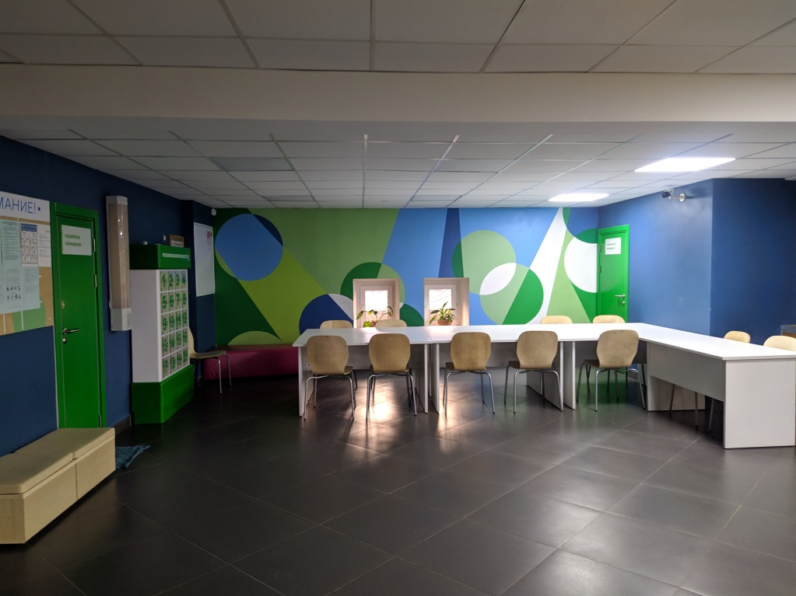

Школа СОШ №50
г. Мирный Мирнинская городская детская музыкальная школа
Школа СОШ №50
г. Мирный Мирнинская городская детская музыкальная школа
Материально-техническое обеспечение и оснащенность образовательного процесса
Материально-техническая база МГДМШ г. Мирного
ГБУДО г. Мирного располагается в построенном по специальному проекту учебно-концертном комплексе, состоящем из шестиэтажного и трёхэтажного зданий общей площадью 6190,3 кв.м.
Общая площадь земельного участка, занимаемого школой, составляет 0,46 га, под застройкой – 0,22 га, другое – 0,24 га.
В школе имеются 66 классов для индивидуальных и групповых занятий, концертный зал, 3 репетиционных зала и хоровой класс на 70 мест каждый, библиотека с фондом, включающим более 22 тысяч экземпляров нотной и музыковедческой литературы, аудио- и видеоматериалов, в том числе 12907 экземпляров учебных пособий, административные помещения, созданы условия для содержания, своевременного обслуживания и ремонта музыкальных инструментов.
На цокольном этаже школы расположены: гардероб для детей на 500 крючков, гардероб для преподавателей на 80 крючков, холл для родителей, туалеты. В школе имеется лифтовое хозяйство, состоящее из 2-х пассажирских и грузопассажирского лифтов, вентиляционная система, состоящая из 4-х приточных и 10 вытяжных установок.
Для обеспечения безопасности пребывания детей и работников в школе смонтирована и исправно функционирует автоматическая охранно-пожарная сигнализация, система оповещения о пожаре, «тревожная» кнопка, кнопка передачи радиосигнала на пост «01», видеонаблюдение, оборудован пост охраны.
На первом этаже расположены Большой концертный зал с холлом, административные кабинеты, учительская, библиотека, комнаты для хранения музыкальных инструментов (струнные, народные, духовые) и хозяйственного инвентаря.
На сцене Большого концертного зала на 419 мест установлены два больших концертных рояля «Блютнер», электроорган «Jubinale – 332» (Италия), хоровые подставки.
На третьем, четвёртом и шестом этажах школы расположены три репетиционных зала на 70 мест каждый, в которых находятся по два концертных рояля.
Занятия проводятся в 66 классах, оснащенных музыкальными инструментами. В 33 классах находятся по 2 рояля (пианино), в 33 классах - по одному роялю (пианино).
С третьего по шестой этаж располагаются классы для индивидуальных занятий. Площадь каждого из них не менее 12,6 кв.м.
На втором этаже, в основном, располагаются классы для групповых занятий по музыкально-теоретическим предметам, класс для занятий хоровым пением, а также классы для игры на ударных инструментах.
Аудитории, предназначенные для уроков по учебным предметам: «Сольфеджио», «Слушание музыки», «Музыкальная литература», «Народное творчество» оснащены фортепиано (рояль/пианино), звуко- и видеотехническим оборудованием, мебелью (нотными досками, столами, стульями, шкафами), оформлены наглядными пособиями. В школе действует Народный музей г. Мирного, который располагается на 2-м и 3-м этажах концертного корпуса и занимает общую площадь примерно 228,9 кв.м. Музей содержит не менее 2000 экспонатов.
В камерном концертном зале музея, расположенном на втором этаже, стоят два кабинетных рояля «Ямаха».
В музее проводятся экскурсии, лекции для учащихся и гостей школы, в том числе зарубежных. Кроме того в музее есть камерный концертный зал, где проходят творческие встречи с деятелями культуры и искусства, концерты учащихся школы и пр.
В 2019 году в рамках реализации городского проекта «Искусство – детям» в МГДМШ г. Мирного был проведен комплексный текущий ремонт, в ходе которого были отремонтированы учебные, учебно-вспомогательные, административные, хозяйственные и технические помещения, а также концертные залы школы. Кроме этого была обновлена и модернизирована комплексная система безопасности.
По окончании ремонта за счет целевых средств, выделенных организации в рамках реализации проекта «Искусство – детям», были обновлены оборудование, в том числе звуковое, мебель, внешняя и внутренняя навигация, оформление учебных, рекреационных, концертных, педагогических, гардеробных и технических помещений школы, а также оснащение школьного сквера (появились самокатная и велосипедная парковки, тематические скамейки). Кроме того в МГДМШ г. Мирного было поставлено 53 единицы музыкальных инструментов: фортепиано (рояли и пианино), струнные, духовые и ударные инструменты.